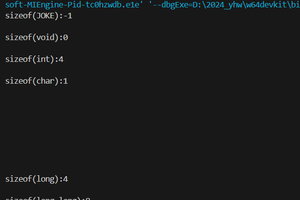
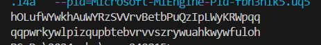
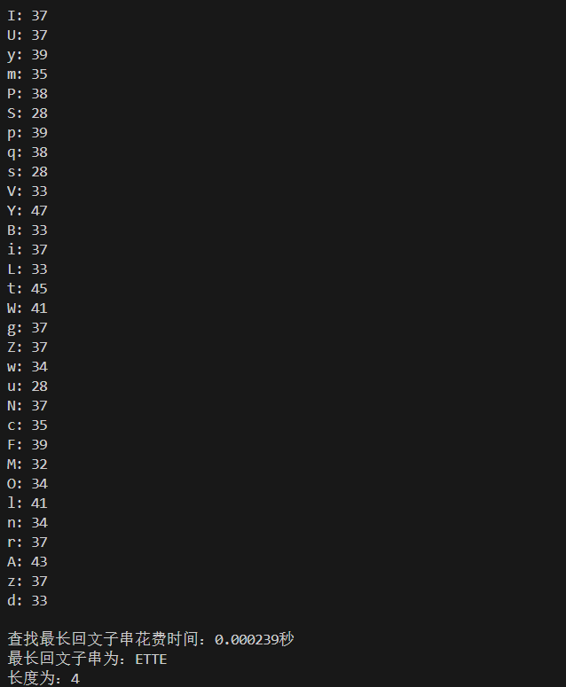
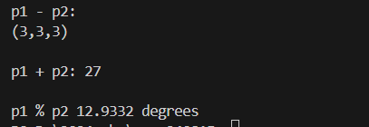
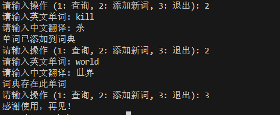
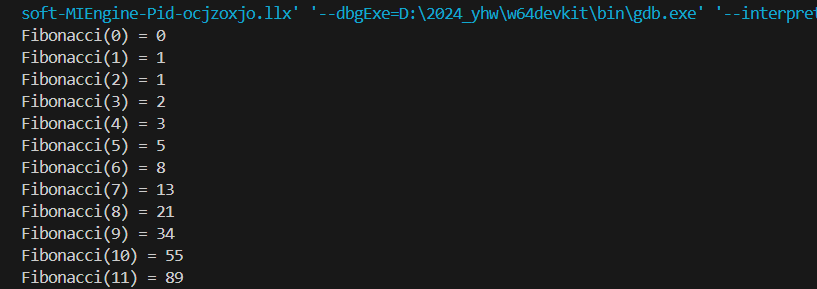

Day2
Day2
课堂练习1：用模板来打印不同类型的长度：
1.知识点：
- template模板允许我们编写能够处理不同数据类型的通用代码。
- 编译时多态
- template
//T代表类型待定
2.代码：
1.定义自定义的JOKE类，一个空的class即可：
class JOKE;
2.定义通用的模板：
template <typename T>//T代表类型待定
int printSize(){
return sizeof(T);
}
这里所有的类型都返回sizeof函数的值
3.定义特殊化（void和joke）：
template <>
int printSize<JOKE>()
{
return -1;
}
template <>
int printSize<void>()
{
return 0;
}
对joke和void两个类进行特殊的模板化
3.运行结果：

课堂作业二：对容器进行操作
1.代码：
1.定义一个string类的容器：
string str(40,' ');
因为前面使用了using namespace std，所以这里没有std::
2.生成随机数：
random_device rd;
mt19937 gen(rd());
uniform_int_distribution<> dis(0, 51);
生成52个随机数，26个为大写，26个为小写
3.随机数填入str：
generate(str.begin(),str.end(),[&](){
int r = dis(gen);
return r < 26? 'a' + r : 'A' + r - 26;
});
这里函数的第三个参数的填充值使用了lamada表达式来代替，主要作用是将生成的52个数字转成52个字母。
&{
int r = dis(gen);
return r < 26? 'a' + r : 'A' + r - 26;
}
[&]表示可以捕获外部的值，这里就使用了外部的dis(gen)。
4.对str进行操作
transform(str.begin(), str.end(), str.begin(), ::tolower);
reverse(str.begin(),str.end());
小写，反转
2.结果：

课堂作业3：生成随机字符串，哈希，回文
1.代码：
1.生成随机数：
同上，多生产一个数组的大小而已，范围200-2000.
2.对不同的字母计数：哈希表
// 使用哈希表进行计数：返回值为unordered_map<char,int>类型的哈希表
unordered_map<char,int> count_char(const string& str){
unordered_map<char, int> charCount;
for (char c : str) {
charCount[c]++;
}
return charCount;
}
用哈希表将每个字符的出现次数存入unordered_map哈希表中
3.最大回文：用分治法进行
通过寻找mid左边的最大回文，右边的最大回文，和中间的两个回文进行返回最大值。一路递归
/ 分治法：左，右，中间
string huiwen_center(const string& str, int left, int right){
while(left >= 0 && right < str.length() && str[left] == str[right]){
left--;
right++;
}
return str.substr(left+1, right-left-1);
}
string findhuiwen(const string& str, int left, int right){
if(left == right) return string(1,str[right]); // 长度为1的字符本身就是回文
if(left > right) return "";
int mid = (left + right) / 2;
string left_huiwen = findhuiwen(str, left, mid);
string right_huiwen = findhuiwen(str, mid+1, right);
string center_huiwen_l = huiwen_center(str, mid-1, mid);
string center_huiwen_r = huiwen_center(str, mid, mid+1);
return max({left_huiwen, right_huiwen, center_huiwen_l, center_huiwen_r},
[](const string& a, const string& b) {
return a.length() < b.length();
});
}
string findmaxhuiwen(const string& str)
{
if(str.empty()) return "";
return findhuiwen(str, 0, str.length()-1);
}
时间复杂度：huiwen()函数的最坏情况是一路进行下去，所有他的时间复杂度为O(n).
findhuiwen()函数利用二分法的思路，将问题切分成了左右两路。
最终T(n) = 2T(2/n) + O(n)
时间复杂度为O(nlogn)
计数函数：遍历一遍str就行，所有他的时间复杂度为O(n)
2.结果：

课堂作业4：操作符重构：
1.知识点：
- operator关键字可以将加减乘除等操作符重构，类似python中的魔法函数
2.结果：

课后作业1：词典的简单实现
1.代码
1.定义一个词典的类。实现了简单的增和查操作：
class Dictionary{
private:
unordered_map <string,string> dict;
public:
Dictionary() {
// 初始化一些单词
dict["string"] = "字符串";
dict["hi"] = "你好";
dict["llm"] = "大模型";
dict["hello"] = "你好";
dict["world"] = "世界";
dict["computer"] = "计算机";
dict["program"] = "程序";
dict["language"] = "语言";
dict["dictionary"] = "词典";
dict["translate"] = "翻译";
}
string translate(string& word)
{
auto it = dict.find(word);
if (it != dict.end()){
return it -> second;
}
return "词典中找不到";
}
void add2dict(string& english,string& chinese)
{
auto it = dict.find(english);
if (it == dict.end())
{
dict[english] = chinese;
cout << "单词已添加到词典" << endl;
}
else{
cout << "词典存在此单词" << endl;
}
}
- tips:为什么用auto it = dict.find(word);而不是string it = dict.find.
我开始使用的是string，自然而然的以为是返回的string嘛，后面报错了一查才发现find返回的是一个迭代器，也就是unordered_map
2.结果：

课后作业2：模板元编程，斐波那契数lie
1. 编译时计算斐波那契数
template<int N>
struct Fibonacci {
static constexpr int value = Fibonacci<N-1>::value + Fibonacci<N-2>::value;
};
template<>
struct Fibonacci<0> {
static constexpr int value = 0;
};
template<>
struct Fibonacci<1> {
static constexpr int value = 1;
};
这部分代码展示了模板元编程的核心特征：
- 使用模板递归来实现编译时计算
- 模板特化用于定义基本情况（0和1）
- static constexpr 确保值在编译时计算
模板元编程的体现：编译器在编译时递归展开这个模板，计算出每个斐波那契数。
2. 编译时生成整数序列
template<int... Ns>
struct sequence {};
template<int N, int... Ns>
struct gen_sequence : gen_sequence<N-1, N-1, Ns...> {};
template<int... Ns>
struct gen_sequence<0, Ns...> {
typedef sequence<Ns...> type;
};
这部分代码展示了： - 使用变参模板来生成整数序列 - 递归模板继承来构建序列 - 模板特化来终止递归
模板元编程的体现：在编译时生成一个包含连续整数的类型。
3. 编译时展开斐波那契序列
template<int... Ns>
void print_fibonacci(sequence<Ns...>) {
constexpr std::array<int, sizeof...(Ns)> fib_values = {Fibonacci<Ns>::value...};
// ...
}
这部分代码展示了：
- 使用参数包展开来生成斐波那契数数组
- constexpr 数组确保所有计算在编译时完成
模板元编程的体现：利用编译器的参数包展开特性，在编译时计算出整个斐波那契序列。
4. 在main函数中触发编译时计算
int main() {
print_fibonacci(typename gen_sequence<10>::type());
return 0;
}
这行代码触发了所有的编译时计算：
- gen_sequence<10>::type 在编译时生成序列
- 这个序列被用作模板参数，进而触发 Fibonacci 模板的实例化
模板元编程的体现：通过类型操作触发复杂的编译时计算过程。
总结
模板元编程在这个程序中主要体现在：
1. 利用模板递归进行编译时计算
2. 使用模板特化定义基本情况和终止条件
3. 通过变参模板和参数包展开生成和操作序列
4. 使用 constexpr 确保编译时计算
5. 通过类型操作和模板实例化触发复杂的编译时逻辑
结果：
